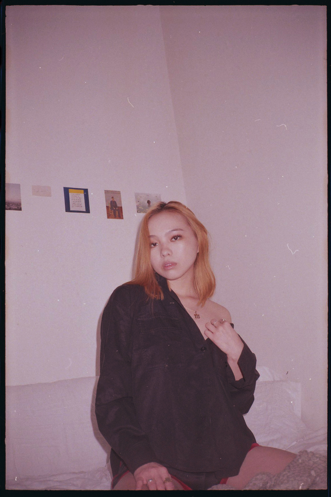
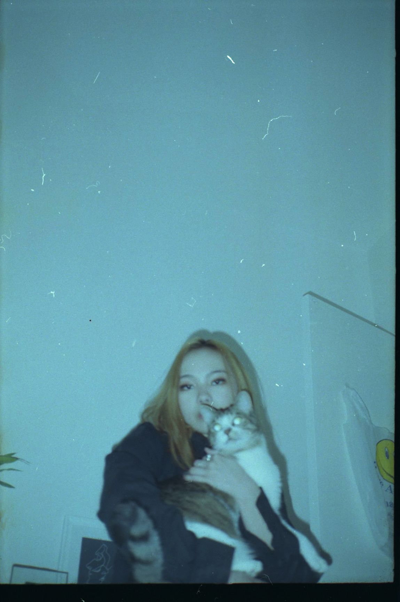

I'm not sure how old I was when I first discovered the term yellow fever, maybe around middle school, at the age when you're just beginning to register all these vague, floating notions of race and sexuality and identity. How they swarm around you like buzzing bees, stinging every so often with reminds of what space you occupy in society. Intangible, yet somehow they still define every interaction and encounter and relationship you have, each and every day.

It's not something that's easy to understand. It's an entirely strange concept— that people will treat you differently or have misconstrued ideas about you, simply because you look different from them. That people will love or hate you just because of your race. That if you're an Asian woman, you suddenly become some exotified creature, a docile china doll, a fierce tiger lady. That men will fantasize about your supposed submissiveness, your meek yet kinky nature in the bedroom.

Even after I learned the definition of Asian fetish, I didn't begin to grasp how terrifying this objectifcation could be until I moved to New York City as a teenager, had my own stinging experiences and began to pierce together the fragments of my identity. It's completely disheartening to know that your existence, in itself, is a fetish— something perverse and other, and that these toxic, hypersexualizing stereotypes can be placed upon you at any time. To always have to wonder whether the person seemingly interested in you can actually see beyong these illusion, or if they just want to try out an extra tight oriental vagina.
My personal narrative only served to heighten my confusion navigating Asian fetish. I was born in the Hunan Province of China, but adopted into a white family. I grew up in white, American suburbia, with the same racist remarks that accompany being the only Asian kid in the classroom, but internally, I never really felt different from the white kids or from my family. The only thing tying me to my cultural identity was my appearance. And when the way you view yourself is already at odds with how the world perceives you, having false, objectified images placed on you only becomes more overwhelming.
Maybe I just received one too many Tinder messages from white guys with some racial one-liner like, 'Damn I want that fried rice' or 'I'm tryna learn how to use chopsticks,' but even the simple 'I love Asian girls!' with dozens of heart-eyed emojis was enough to make me feel ugly, demeaned and overall defeated. The feeling that I would always be seen as lesser or exotic by white men— that all my relationships, past and future, were and forever would be defined by my race— surged over me in a wave of paranoia. That fear lingered and saturated into hopelessness for a brief while, until I found within myself a new energy and inspiration for resistance.
This publication is in response to the lack of platforms created by and for Asian Americans. I wanted to talk about these issues and I realized the only audience that would understand, that could directly relate, was other Asian women. How could these experiences, our fetishized existences, transform into something beautiful and empowering? Would it be enough to investigate why and how these stereotypes are perpetuated, to outline the harm being done and to establish what needs to change?
I held discussions with my friends and photographed them in their apartments, unstaged, in the most raw and authentic way I could think of— on film. It was a model that expanded, in this issue, to include gender stereotypes afflicted on Asian men, the effect of media, pop culture and porn, and how, ultimately, the ideas all resonate from the damage inflicted by colonialism. And how we will only ever be able to move forward through education, through community and through sharing our narratives as equal humanity.
This is an effort to disrupt fantasy with authenticity, to overcome the idea of the submissive Asian female and reclaim Asian femininity as a form of empowerment. I hope that you can find a sense of solidarity in these stories of individuals, within our universal experience.